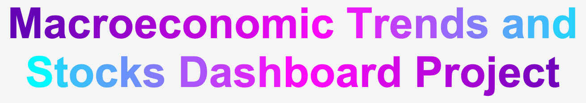

Macroeconomic and Stock Data Visualization Dashboard
This dashboard contains data visualizations of historical stock data for GOLD, IXIC and GSPC Indexes. You will also find data visulizations for Macroeconomic data indicators.
The different charts on the dashboard have different functionalities. You can hover over each chart to get specific data point information.
- You may be able to filter by de-selecting/selecting specific variables from the legend in order to get a micro-view of that variable's data.
- You may be able to zoom-in and zoom-out by double-clicking on the chart.
- You may be able to move left and right when viewing a chart with the help of a scroll-bar if it appears.